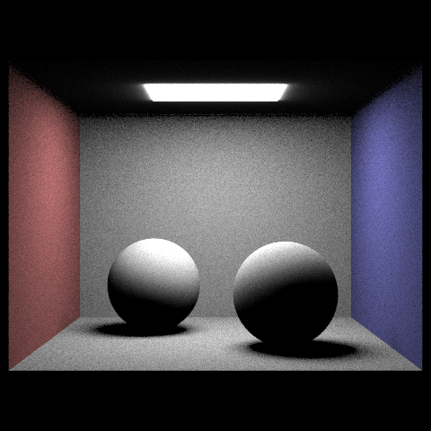

CS184/284A Spring 2025 Homework 3 Write-Up
Link to webpage: https://cal-cs184-student.github.io/hw-webpages-hammertime/hw3/index.html
Link to GitHub repository: https://github.com/cal-cs184-student/sp25-hw3-nobodyakaodysseus

Use of GenAI
ChatGPT was used to help learn/how to use certain C++ functions such as std::partition as I am still not super experienced with C++. Additionally, ChatGPT was used to help debug issues and break down concepts I was having trouble with, such as global illumination, which I used along with supplemental lecture and discussion material to ensure I understood what I was doing, using it as a learning tool and a second eye to catch any bugs I may have not been able to.
Overview
I learned how to generate rays and pass them through a scene, and how to calculate and show the light that bounces off objects, or that just comes straight from the light source. I used bounding boxes and bvhs to increase speed and efficiency, as well as direct illumination and global illumination to fully raytrace a scene to provide realistic lighting and shading through raytracing. It was neat to see that I could create realistic shading even down to colored shadows.
Part 1: Ray Generation and Scene Intersection
In ray generation, I shifted the coordinates given to us into coordinates relative to the camera space, before using those adjusted coordinates to calculate our direction vector by multiplying those coordinates to their corresponding camera space bottom-left and top-right coordinates axis. This was (+-tan(0.5 x hFov), +-tan(0.5 x vFov), -1) turning into
Vector3D(x*tan(0.5*radians(hFov)), y*tan(0.5*radians(vFov)), -1)
I then just multiply the camera-to-world rotation matrix to the direction vector, nornalize it, and initialize the
origin, direction, and min and maximum t of our ray. This overall is shifting our ray from the image plane into a camera space where we find
the direction of the ray, before translating that light back into the image plane so it's properly lit up.
To raytrace the pixels, I loop through the samples we have and get a uniformly distributed and randomly selected sample that I use
the coordinates of along with our given pixel coordinates to normalize our coordinates on the image plane, generate our rays
based on the normalized coordinates (using the function I implemented for ray generation), and get an estimation of
the screen radiance which I add up over all the samples we take and average it in a Vector3D, and update the pixel with that
averaged screen radiance, incorporating it into my Monte Carlo estimate of the Vector3D of the pixel.
For primitive intersections, that comes in with ray-triangle and ray-sphere intersections where we check to see if there is an
interseciton and report back the nearest intersection point by updating max_t to be the nearest intersection so we can ignore primitives/intersections
that are further away.
An example of that comes in my implementation of the triangle intersect functions, where I use the Möller Trumbore Algorithim using the ray origin,
ray direction, and vertices of the triangles. I subtract and take crossproducts of them to create intermediate values that I later use to create an output vector
that is a 3D vector filled with dot products of the intermediate products scaled by 1 over the dot product of two of the intermediate values.
Doing so, I get the t value at which the ray intersects the primitive, as well as the barycentric coordinate weights if all add up to 1 then means we have a successful
intersection. Those weights are used to interpolate the surface normals, and the intersection variables (such as t, normals, primitives, bsdf) and the ray.max_t are all filled out before I return true.
Otherwise, if it fails at any point, false is returned.

|
|

|
Part 2: Bounding Volume Hierarchy
To construct the BVH, I go through all the primitives in our BVHnode, and add their bounding box to a bounding box.
Once that is done, I create a new node premeptively before checking if the amount of primitives (that weren't a null pointer)
we checked was less than or equal to the max_leaf_size. If so, that means it was a leaf, and I can set the start and end
primitive iterators of the node before returning it.
If it wasn't a leaf node (aka that we had more primitives than the max size our leaf would allow), I would create an intermediate "centroidbbox"
where I store the centroids of the bbox's of all of our primitives in the node. Then I find the longest axis of our overarching bbox, and then use that to
calculate the average centroid we have using the previous centroids collected, using that as a splitting point since it would try to ensure a more even split of
the centroids/primitives if they all happened to be clustered in one area of the bounding box and not uniformly dispersed.
I then call std::partition to get two iterators, one for the left side of the bbox, and one for the right side.
Then, I recursively call construct_bvh on the left and right iterators to construct the left and right node, and this process repeats until all of our last leaves are placed.
At the end of each call, the node's left, and right children are set, as well as it's bounding box, and I expand it's bounding box with the right node's bounding box
due to generally "halving" the left side of a bounding box and splitting off into more and more children on the left.
The rendering times of complex geometrical images took around 12 minutes or less with BVH acceleration, with CBLucy taking about 12 minutes, CBDragon taking a little less than 12 minutes, and
CBcoil taking less than 30 seconds. Without BVH acceleration, all three took over an hour to render, and with a check in at thirty minutes of rendering, not even 1% was rendered.
With BVH acceleration, we are able to quickly traverse the tree, and discard the areas of the image that the light doesn't hit by going down to the leaves and running intersection on those primitives and returning
the closest intersection. Since our leaves are capped at a maximum primitive limit, this vastly improves computation time since we're essentially just checking a constant number of primitives. Without using BVHAcceleration,
we would have to cycle through every single primitive, which could be on the order of thousands, and millions, which wastes a lot of time computationally if it's not in the area that we are looking, so we're wasting a lot of
time looking at air/in the wrong area. With BVHAcceleration, we narrow the scope immensely, and can cut down the time needed to ray trace and appropriately render our scenes.

|

|
|
Part 3: Direct Illumination
For estimate_direct_lighting_hemisphere, I set up the pdf (1/2*pi), and a running sum. For every sample for up to num_samples,
I use the hemisphereSampler to get wi, which I put into world coordinates before normalizing it. I then initialize a new ray using
the hitpoint as our origin, the World_wi as the direction, min_t as EPS_F and max_t as INF_F, and initialized an empty Intersection variable.
I then use the new ray and intersection I created to check if there is an intersection, and if there was, I would take the emission of the new intersection variable, the bsdf of
our original intersection variable, and get the cos_theta of our wi, and divide it all by our original pdf.
For estimate_direct_lighting_importance, it starts out similarily where I initialize a sum and an establishing count of samples (numsamples), before
I loop through all the lights in the scene, and for each light I check if it's a point light or not, and
set their samples accordingly (numsamples = 1 for point lights, and ns_area_light for other lights). I set up another forloop which samples the light num_sample times, which the rest of the code is in.
I then get the radiance of the light by using sample_L, and get the wi which I put into object coordinates (objwi).
I then initialize an empty intersection variable and ray similarily to before, with the origin as hit_p, direction as the original wi, min_t as EPS_F, and max_t as distToLight-EPS_F.
I then check if there is an intersection with those new variables, and if there isn't, then I know we have the ray coming back to the light source, so
then I sum up the ((radiance * isect.bsdf->f(w_out, objw_in) * cos_theta(objw_in))/pdf).
Once we loop up to a new light, I divide sum by the number of samples that were taken, and once we're completely done with the loops, I return sum at the end.
Looking at varying levels of light in the scene with soft shadows, we can see that with less rays, there's less of a softer/lighter grey in the soft shadows, instead just scatered black dots and higher levels of noise.
As the number of rays goes up, we get a smoother transition between colors, seeing black and white, but also an intermediate grey that fades up into white, or melds a bit better into black, showing less noise.
Uniform hemisphere sampling tends to have more noise than lighting sampling tends to have, having a sort of grainy effect across the image that gives a tv static esque look.
Meanwhile, Lighting Sampling through importance sampling tends to have a much cleaner, sleeker look with no noise at all. This is due to Importance Sampling effectively smoothing the integrand curve, and sampling
where there are more contributions to the integral, and we're sampling from the lights itself instead of the hemisphere, meaning it's more concentrated on the light instead of spreading everywhere in the scene. Because of this, the lowered noise adds to a smoother finish.
|
|

|
|
|
|
|
|
|
|
|
|
Part 4: Global Illumination
My implementation of at_least_one_bounce_radiance starts with calling one_bounce_radiance and adding it to L_out. I then check
the recursive basecase if the ray depth is 1 or less, which I then just return L_out. Otherwise, I initialize the wi and pdf through sample_f of our intersection's bsdf,
then I place the wi in world coordinates and normalize it. I initialize a new ray and intersection variable, with origin hit_p, direction world_wi, min_t EPS_F, max_t INF_F,
and depth being the original ray's depth subtracted one. I then check if there's an intersection with the new ray and new intersection variable via use of the scene's bvh.
If there is an intersection, I conduct Russian Roulette with a 30% chance of termination, but if it' succeeds, I recursively call the function again and multiply it as we have before, and additionally divide by 0.7 to help normalize this.
((at_least_one_bounce_radiance(newray, tempisect) * bsdf * cos_theta(w_in))/pdf/0.7;). Then, I check if isAccumBounces true, and if so, I add it to L_out, and otherwise I only add it to L_out if the new ray's depth is equal to 1, meaning it's at the n'th bounce that we want.
At the very end, I just return L_out. I additionally did set the ray.depth to be the max_ray_depth in raytrace_pixel, and set up sample_f so it would return a pdf, and wi along with calling f on our bsdf.
I did not have enough time to render everything at the resoultions asked in the deliverables due to time constraints unfortunately, but I will provide the best approximations I can, I am so sorry.
I was unable to correctly code the isAccumBounces, so I will reference the spec's images, which are not linked here for redundancy. I have not linked my own images since they look more or less the same as my isAccumBounces == True and Russian Roulette.
The second bounce is brighter than the third, the third having far more shadows, but more light on the floor while the second had more light on the
surfaces of spheres and walls. In the rasterization/rendering of the image, the second bounce makes the shadows on the bottom of the spheres and the walls/ceiling lighter with ambient
lighting, darker than the directly lit areas but not entirely black due to the diffuse lighting and ambient lighting bouncing around, while the third bounce of light in rasterization add more color to the shadows cast by the balls and lightens the shadows slightly, having shadows that are more blue or red, and the floor generally having a slight bit more of a glow.
These together add to the ambience of the piece, adding more realistic lighting implications with colored shadows and more soft shadows since real life shadows are rarely purely black, and everything covered in harsh shadows, there often is a lot of diffuse and ambient lighting that reflects upwards.
|
|
|
|
|
|
|
|
|
|
|
|
|
|
|
|
|
|
|
|

|
|
|
|
|
|
|
Part 5: Adaptive Sampling
Adaptive sampling is a sort of dynamic sampling that instead focuses on sampling from more difficult/complex parts of images so rendering is smoother and we can allocate resources more efficiently so we
don't have to wait the same amount of time for a pixel to converge or use the same amount of resources on a simple part
of the image when we can put more of our effort elsewhere to come out with the most efficient outcome.
In raytrace_pixel, I set up the s1 (mean helper), s2 (standard deviation helper), and traker samples to use within our for loop where I loop through numsamples amount of times.
There, I sample from the grid, normalize the x and y coordinates and generate a ray using those coordinates. I set the ray depth to be the max_ray_depth that there can be.
Then, I get the screen radiance using est_radiance_global_illumination and add that to my tracker variable. I then add the illuminance to s1, and the squared illuminace to s2, and increment tracker samples.
Then every samplesPerBatch samples (ie 32), and if we aren't just starting the loop, I calculate the mean and standard deviation squared, and check if
1.96*I is less than or equal to the max Tolerance*mean, I just break out of the for loop and immediately divide our tracker sum by the tracker samples we accumulated through the forloop, before updating our pixels and putting tracker samples into our sampleCountBuffer.
|
|
|
|
|
|
(Optional) Part 6: Extra Credit Opportunities
I don't have anything since I was struggling and used nearly all my slip days but would a cute shark give a extra bonus credit point?

|